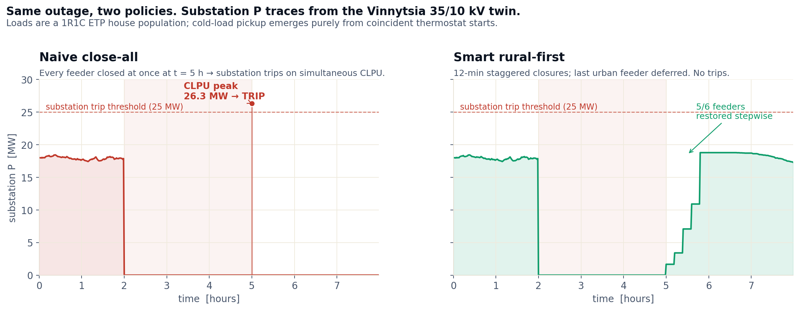
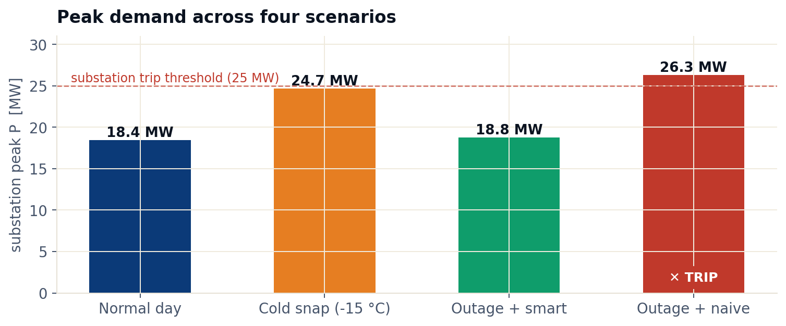
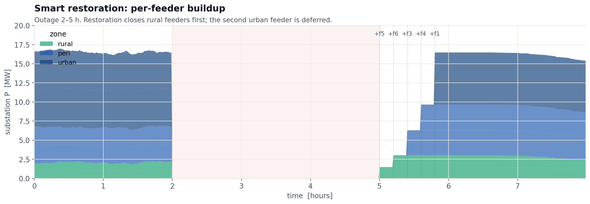

An AI advisor that learns the safest sequence to re-energize feeders after a blackout — trained on a digital twin of Ukraine's actual network, and presented to operators with a one-line explanation for every recommendation.
After every blackout, an operator must re-energize a feeder. With every thermostat, fridge, and heater off, demand snaps back all at once and trips the upstream breaker — blackout again. Operators perform the restart under air-raid sirens, with degraded telemetry, sometimes from candlelight.
A reinforcement-learning policy that recommends which segment to energize next, at what voltage ramp, after what dwell time. Trained against millions of synthetic blackout scenarios on a calibrated digital twin of Ukrainian topology. Every recommendation is shown to a human operator with an explanation. Never autonomous.
Restoration is the one grid problem where seconds of delay cost megawatt-hours, and where the right action depends on weather, time, and damage. That is exactly the regime where RL beats both human procedures and classical optimization.
One oblast's 35 / 10 kV network modeled in OpenDSS. Calibrated against ≥18 months of historical SCADA traces. Loads modeled as a population of equivalent-thermal-parameter houses, so cold-load behavior emerges rather than being hard-coded.
Synthesize millions of blackout starting states across season, ambient temperature, outage duration, and damage pattern. This dataset — restoration under realistic adversarial damage — exists nowhere else.
PPO with action masking in Stable-Baselines3. Curriculum from single feeder to full regional topology. Reward = load restored, penalized for trips, voltage violations, and time. An explainer is attached at training time, not bolted on after.
Replay the policy on Typhoon HIL in real time. This is the sim-to-real check: does it still beat the baseline when load parameters drift and measurement noise is added?
The console shows the agent's recommendation next to the operator's intended action. The operator decides. Every disagreement becomes a training example.
After months of high agreement, the operator can accept a recommendation with one click. Two-person confirmation above a learned risk threshold. The system never becomes fully closed-loop.
Assume seasonal averages and stable topology. Ukraine in 2026 has neither.
Requires re-formulating every time the grid changes shape. The grid changes shape every week.
Maps state → next action. Topology and damage are inputs, not assumptions. Retrains on its own disagreements.
One 10 kV feeder in OpenDSS. The trained policy beats both the greedy baseline and the paper procedure on time-to-99% restoration and on cascading trips.
An entire oblast modeled and calibrated to historical SCADA. Policy curriculum-trained across seasons and damage patterns. Operator-facing explainer working.
Real-time validation on Typhoon HIL. The console runs live in a control room. Operators see recommendations, decide, and the disagreement log feeds the next training run.
One-click accept becomes available where the agent's risk score is low and the operator agrees. Two-person confirmation above the threshold. Always a human in the loop.
Every number below comes from running the Phase-0 agent against scenarios it never saw during training — and the safety shield against the same 1000 seeds. Three independently trained policies, three random seeds, one OpenDSS twin.
Same scenario (ambient +1.6 °C, 6 h cold soak) given to four policies. Each panel runs the actual telemetry the OpenDSS twin produced.
Greedy trips at step 6. Sequential-d8 spaces closures with a 4-min dwell — safe but ~32 min. PPO finishes in ~10 min with no trip on this scenario. PPO + shield takes only one extra step here because the shield never had to veto — but on the long tail where bare PPO trips, the shield is what brings the rate to 0%.
Same 1000 seeds for every policy. PPO numbers are the mean of three independently trained policies; ± is the spread across those seeds.
| policy | trip% | restore% | steps to 99% | peak A |
|---|---|---|---|---|
| greedy | 100% | 0% | — | 256 |
| sequential, dwell 8 | 0.3% | 99.7% | 55 | 224 |
| sequential, dwell 12 | 0.0% | 100.0% | 79 | 222 |
| PPO (3-seed) | 9.2% ± 1.6 | 90.8% ± 1.6 | 11.5 ± 0.0 | 232 ± 0.3 |
| PPO + safety shield | 0.0% ± 0.0 | 94.5% ± 1.3 | 11.7 ± 0.1 | 228 ± 0.1 |
800 scenarios × 3 trained policies, binned by outage duration (rows) and ambient temperature (columns). Cell is bare-PPO trip rate. Failures dispersed across the parameter space, not concentrated — which is why the next attack was a shield (forecasting veto) rather than more training.
The worst column is +1 to +3 °C — counter-intuitively, the policy handled deep cold better than mild ambient, because deep cold produced more uniformly heavy CLPU it had seen during training while mild ambient gave variable inrush the policy guessed wrong on.
Phase-1 answer: a safety shield that runs a one-step forecast under each candidate close and vetoes if predicted trunk exceeds 228 A (95% of trip). Trip rate dropped from 9.2% to 0.0% with only +0.2 steps cost.
The product isn't the policy — it's this card. Every recommendation arrives with a forecast, a one-line "why," a confidence score, and the safety-shield verdict. Never closed-loop; the operator always decides.
An oblast-scale digital twin: 35 / 10 kV substation, six 10 kV feeders, 36 distribution transformers. Loads are a population of 1R1C thermostatic-house equivalents. Cold-load pickup isn't a multiplier here — it's what happens when N thousand thermostats find themselves below their lower deadband at the same moment.



For the full interactive demo — four scenarios, play / pause / scrub, network detail, per-feeder load and indoor temperature panels — visit restart-grid / twin →. Source code: vinnytsia-twin (twin, calibration, scenarios) and restart-grid-rl (the RL env that consumes the calibrated population).
Every cascading trip during restoration is another hour without power. In a Ukrainian winter that is heating off for hospitals, water pumps stopped, dialysis interrupted, apartment-block boilers refusing to restart, and street-corner generators bleeding diesel reserves the city cannot replace. A measurable cut in cascading trips during restoration is not a metric — it is hours of heat returned to people in February.
Field load won't perfectly match the population we sampled.
One visibly wrong recommendation costs a year of credibility.
SCADA history is sensitive.
A re-routed substation is a new problem.
The case above isn't theoretical. Three open repos already implement the foundations: a Phase 0 RL policy that beats the safe baseline, an oblast-scale digital twin where cold-load pickup emerges naturally, and a longer technical write-up of the full design.
An 8-segment 10 kV feeder in OpenDSS, an ETP+CLPU load model, a Gymnasium env, two baselines, and a MaskablePPO trainer. The trained policy finishes restoration ~4× faster than the safe dwell baseline at the same zero-trip safety.
github.com/anastasiiapoliienko/restart-grid-rlA Vinnytsia 35 / 10 kV substation in OpenDSS with six feeders and an ETP house population. Cold-load pickup emerges naturally — no CLPU multiplier. Baseline and CLPU-aware calibrations included.
github.com/anastasiiapoliienko/vinnytsia-twinThe longer write-up: architecture, reward function, state and action spaces, data sources, tech stack, the phased roadmap, risks, and success metrics. With an interactive naive-vs-RL restoration demo.
/technical/